- 00 学习指南 如何学习这门编译原理实战课？.md.html
- 00 开篇词 在真实世界的编译器中游历.md.html
- 01 编译的全过程都悄悄做了哪些事情？.md.html
- 02 词法分析：用两种方式构造有限自动机.md.html
- 03 语法分析：两个基本功和两种算法思路.md.html
- 04 语义分析：让程序符合语义规则.md.html
- 05 运行时机制：程序如何运行，你有发言权.md.html
- 06 中间代码：不是只有一副面孔.md.html
- 07 代码优化：跟编译器做朋友，让你的代码飞起来.md.html
- 08 代码生成：如何实现机器相关的优化？.md.html
- 09 Java编译器（一）：手写的编译器有什么优势？.md.html
- 10 Java编译器（二）：语法分析之后，还要做些什么？.md.html
- 11 Java编译器（三）：属性分析和数据流分析.md.html
- 12 Java编译器（四）：去除语法糖和生成字节码.md.html
- 13 Java JIT编译器（一）：动手修改Graal编译器.md.html
- 14 Java JIT编译器（二）：Sea of Nodes为何如此强大？.md.html
- 15 Java JIT编译器（三）：探究内联和逃逸分析的算法原理.md.html
- 16 Java JIT编译器（四）：Graal的后端是如何工作的？.md.html
- 17 Python编译器（一）：如何用工具生成编译器？.md.html
- 18 Python编译器（二）：从AST到字节码.md.html
- 19 Python编译器（三）：运行时机制.md.html
- 20 JavaScript编译器（一）：V8的解析和编译过程.md.html
- 21 JavaScript编译器（二）：V8的解释器和优化编译器.md.html
- 22 Julia编译器（一）：如何让动态语言性能很高？.md.html
- 23 Julia编译器（二）：如何利用LLVM的优化和后端功能？.md.html
- 24 Go语言编译器：把它当作教科书吧.md.html
- 25 MySQL编译器（一）：解析一条SQL语句的执行过程.md.html
- 26 MySQL编译器（二）：编译技术如何帮你提升数据库性能？.md.html
- 27 课前导读：学习现代语言设计的正确姿势.md.html
- 28 前端总结：语言设计也有人机工程学.md.html
- 29 中端总结：不遗余力地进行代码优化.md.html
- 30 后端总结：充分发挥硬件的能力.md.html
- 31 运行时（一）：从0到语言级的虚拟化.md.html
- 32 运行时（二）：垃圾收集与语言的特性有关吗？.md.html
- 33 并发中的编译技术（一）：如何从语言层面支持线程？.md.html
- 34 并发中的编译技术（二）：如何从语言层面支持协程？.md.html
- 35 并发中的编译技术（三）：Erlang语言厉害在哪里？.md.html
- 36 高级特性（一）：揭秘元编程的实现机制.md.html
- 37 高级特性（二）：揭秘泛型编程的实现机制.md.html
- 38 综合实现（一）：如何实现面向对象编程？.md.html
- 39 综合实现（二）：如何实现函数式编程？.md.html
- 40 成果检验：方舟编译器的优势在哪里？.md.html
- 不定期加餐1 远程办公，需要你我具备什么样的素质？.md.html
- 不定期加餐2 学习技术的过程，其实是训练心理素质的过程.md.html
- 不定期加餐3 这几年，打动我的两本好书.md.html
- 不定期加餐4 从身边的牛人身上，我学到的一些优秀品质.md.html
- 不定期加餐5 借助实例，探究C++编译器的内部机制.md.html
- 划重点 7种编译器的核心概念与算法.md.html
- 期末答疑与总结 再次审视学习编译原理的作用.md.html
- 热点问题答疑 如何吃透7种真实的编译器？.md.html
- 用户故事 易昊：程序员不止有Bug和加班，还有诗和远方.md.html
- 知识地图 一起来复习编译技术核心概念与算法.md.html
- 结束语 实战是唯一标准！.md.html
- 捐赠
32 运行时（二）：垃圾收集与语言的特性有关吗？
你好，我是宫文学。今天，我们继续一起学习垃圾收集的实现机制以及与编译器的关系。
对于一门语言来说，垃圾收集机制能够自动管理从堆中申请的内存，从而大大降低程序员的负担。在这门课的第二大模块“真实编译器解析篇”中，我们学习Java、Python、Go、Julia和JavaScript这几门语言，都有垃圾收集机制。那在今天这一讲，我们就来学习一下，这些语言的垃圾收集机制到底有什么不同，跟语言特性的设计又是什么关系，以及编译器又是如何配合垃圾收集机制的。
这样如果我们以后要设计一门语言的话，也能清楚如何选择合适的垃圾收集机制，以及如何让编译器来配合选定的垃圾收集机制。
在讨论不同语言的垃圾收集机制之前，我们还是需要先了解一下，通常我们都会用到哪些垃圾收集算法，以及它们都有什么特点。这样，我们才能深入探讨应该在什么时候采用什么算法。如果你对各种垃圾收集算法已经很熟悉了，也可以从这一讲的“Python与引用计数算法”开始学习；如果你还想理解垃圾收集算法的更多细节，也可以去看看我的第一季课程《编译原理之美》的第33讲的内容。
垃圾收集算法概述
垃圾收集主要有标记-清除（Mark and Sweep）、标记-整理（Mark and Compact）、停止-拷贝（Stop and Copy）、引用计数、分代收集、增量收集和并发收集等不同的算法，在这里我简要地和你介绍一下。
首先，我们先学习一下什么是内存垃圾。内存垃圾，其实就是一些保存在堆里的、已经无法从程序里访问的对象。
我们看一个具体的例子。
在堆中申请一块内存时（比如Java中的对象实例），我们会用一个变量指向这块内存。但是，如果给变量赋予一个新的地址，或者当栈桢弹出时，该栈桢的变量全部失效，这时，变量所指向的内存就没用了（如图中的灰色块）。
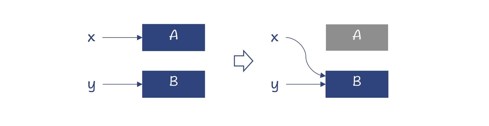
图1：A是内存垃圾
另外，如果A对象有一个成员变量指向C对象，那么A不可达，C也会不可达，也就失效了。但D对象除了被A引用，还被B引用，仍然是可达的。
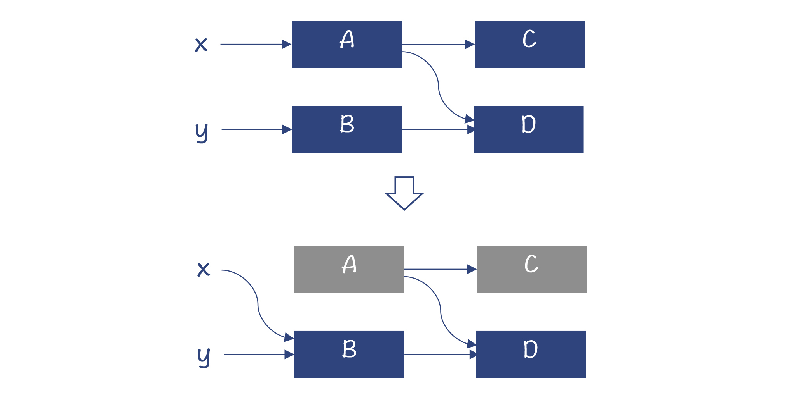
图2：A和C是内存垃圾
那么，所有不可达的内存就是垃圾。所以，垃圾收集的重点就是找到并清除这些垃圾。接下来，我们就看看不同的算法是怎么完成这个任务的。
标记-清除
标记-清除算法，是从GC根节点出发，顺着对象的引用关系，依次标记可达的对象。这里说的GC根节点，包括全局变量、常量、栈里的本地变量、寄存器里的本地变量等。从它们出发，就可以找到所有有用的对象。那么剩下的对象，就是内存垃圾，可以清除掉。
标记-整理
采用标记-清除算法，运行时间长了以后，会形成内存碎片。这样在申请内存的时候，可能会失败。
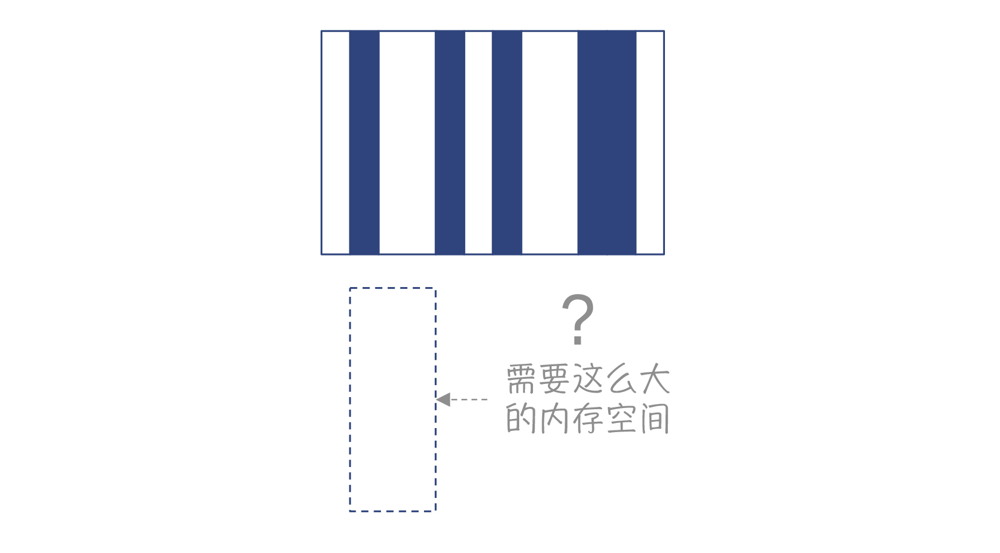
图3：内存碎片导致内存申请失败
为了避免内存碎片，你可以采用变化后的算法，也就是标记-整理算法：在做完标记以后，做一下内存的整理，让存活的对象都移动到一边，消除掉内存碎片。
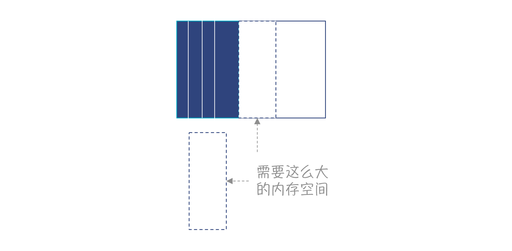
图4：内存整理以后，可以更有效地利用内存
停止-拷贝
停止和拷贝算法把内存分为新旧空间两部分。你需要保持一个堆指针，指向自由空间开始的位置。申请内存时，把堆指针往右移动就行了。
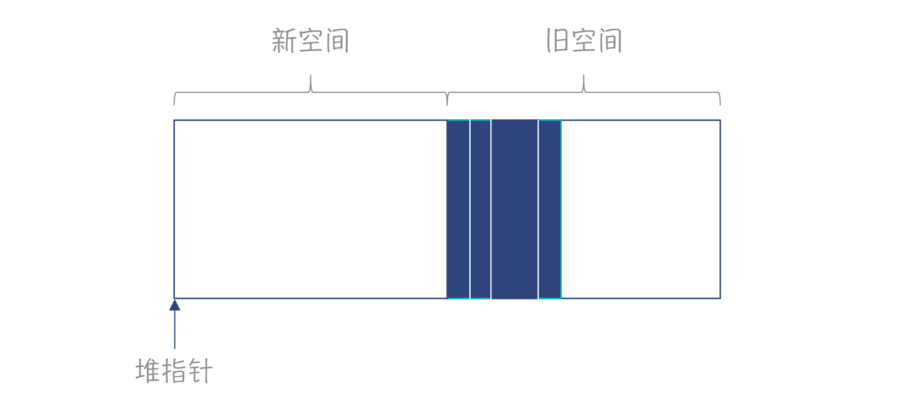
图5：在旧空间中申请内存
当旧空间内存不够了以后，就会触发垃圾收集。在收集时，会把可达的对象拷贝到新空间，然后把新旧空间互换。
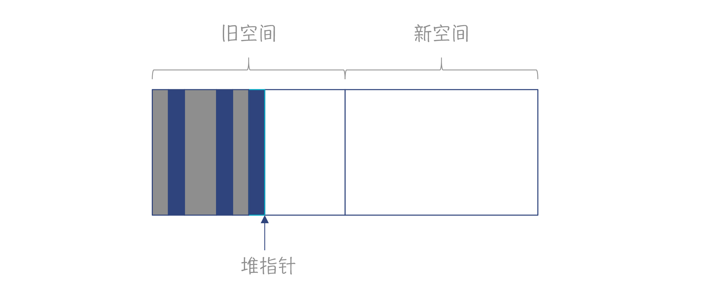
图6：新旧空间互换
停止-拷贝算法，在分配内存的时候，不需要去查找一块合适的空闲内存；在垃圾收集完毕以后，也不需要做内存整理，因此速度是最快的。但它也有缺点，就是总有一半内存是闲置的。
引用计数
引用计数方法，是在对象里保存该对象被引用的数量。一旦这个引用数为零，那么就可以作为垃圾被收集走。
有时候，我们会把引用计数叫做自动引用计数（ARC），并把它作为跟垃圾收集（GC）相对立的一个概念。所以，如果你读到相关的文章，它把ARC和GC做了对比，也不要吃惊。
引用计数实现起来简单，并且可以边运行边做垃圾收集，不需要为了垃圾收集而专门停下程序。可是，它也有缺陷，就是不能处理循环引用（Reference Cycles）的情况。在下图中，四个对象循环引用，但没有GC根指向它们。它们已经是垃圾，但计数却都为1。
图7：循环引用
另外，由于在程序引用一个对象的前后，都要修改引用计数，并且还有多线程竞争的可能性，所以引用计数法的性能开销比较大。
分代收集
在程序中，新创建的对象往往会很快死去，比如，你在一个方法中，使用临时变量指向一些新创建的对象，这些对象大多数在退出方法时，就没用了。这些数据叫做新生代。而如果一个对象被扫描多次，发现它还没有成为垃圾，那就会标记它为比较老的时代。这些对象可能Java里的静态数据成员，或者调用栈里比较靠近根部的方法所引用的，不会很快成为垃圾。
对于新生代对象，可以更频繁地回收。而对于老一代的对象，则回收频率可以低一些。并且，对于不同世代的对象，还可以用不同的回收方法。比如，新生代比较适合复制式收集算法，因为大部分对象会被收集掉，剩下来的不多；而老一代的对象生存周期比较长，拷贝的话代价太大，比较适合标记-清除算法，或者标记-整理算法。
增量收集和并发收集
垃圾收集算法在运行时，通常会把程序停下。因为在垃圾收集的过程中，如果程序继续运行，可能会出错。这种停下整个程序的现象，被形象地称作“停下整个世界（STW）”。
可是让程序停下来，会导致系统卡顿，用户的体验感会很不好。一些对实时性要求比较高的系统，根本不可能忍受这种停顿。
所以，在自动内存管理领域的一个研究的重点，就是如何缩短这种停顿时间。增量收集和并发收集算法，就是在这方面的有益探索：
- 增量收集可以每次只完成部分收集工作，没必要一次把活干完，从而减少停顿。
- 并发收集就是在不影响程序执行的情况下，并发地执行垃圾收集工作。
好了，理解了垃圾收集算法的核心原理以后，我们就可以继续去探索各门语言是怎么运用这些算法的了。
首先，我们从Python的垃圾收集算法学起。
Python与引用计数算法
Python语言选择的是引用计数的算法。除此之外，Swift语言和方舟编译器，采用的也是引用计数，所以值得我们重视。
Python的内存管理和垃圾收集机制
首先我们来复习一下Python内存管理的特征。在Python里，每个数据都是对象，而这些对象又都是在堆上申请的。对比一下，在C和Java这样的语言里，很多计算可以用本地变量实现，而本地变量是在栈上申请的。这样，你用到一个整数的时候，只占用4个字节，而不像Python那样有一个对象头的固定开销。栈的优势还包括：不会产生内存碎片，数据的局部性又好，申请和释放的速度又超快。而在堆里申请太多的小对象，则会走向完全的反面：太多次系统调用，性能开销大；产生内存碎片；数据的局部性也比较差。
所以说，Python的内存管理方案，就决定了它的内存占用大、性能低。这是Python内存管理的短板。而为了稍微改善一下这个短板，Python采用了一套基于区域（Region-based）的内存管理方法，能够让小块的内存管理更高效。简单地说，就是Python每次都申请一大块内存，这一大块内存叫做Arena。当需要较小的内存的时候，直接从Arena里划拨就好了，不用一次次地去操作系统申请。当用垃圾回收算法回收内存时，也不一定马上归还给操作系统，而是归还到Arena里，然后被循环使用。这个策略能在一定程度上提高内存申请的效率，并且减少内存碎片化。
接下来，我们就看看Python是如何做垃圾回收的。回忆一下，在第19讲分析Python的运行时机制时，其中提到了一些垃圾回收的线索。Python里每个对象都是一个PyObject，每个PyObject都有一个ob_refcnt字段用于记录被引用的数量。
在解释器执行字节码的时候，会根据不同的指令自动增加或者减少ob_refcnt的值。当一个PyObject对象的ob_refcnt的值为0的时候，意味着没有任何一个变量引用它，可以立即释放掉，回收对象所占用的内存。
现在你已经知道，采用引用计数方法，需要解决循环引用的问题。那Python是如何实现的呢？
Python在gc模块里提供了一个循环检测算法。接下来我们通过一个示例，来看看这个算法的原理。在这个例子中，有一个变量指向对象A。你能用肉眼看出，对象A、B、C不是垃圾，而D和E是垃圾。
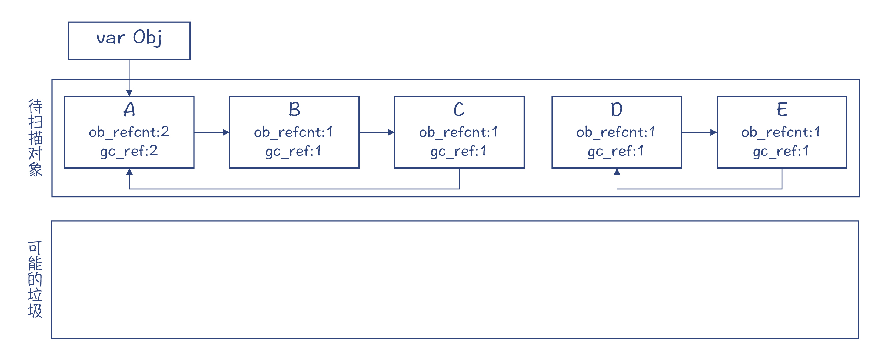
图8：把容器对象加入待扫描列表
在循环检测算法里，gc使用了两个列表。一个列表保存所有待扫描的对象，另一个列表保存可能的垃圾对象。注意，这个算法只检测容器对象，比如列表、用户自定义的类的实例等。而像整数对象这样的，就不用检测了，因为它们不可能持有对其他对象的引用，也就不会造成循环引用。
在这个算法里，我们首先让一个gc_ref变量等于对象的引用数。接着，算法假装去掉对象之间的引用。比如，去掉从A到B的引用，这使得B对象的gc_ref值变为了0。在遍历完整个列表以后，除了A对象以外，其他对象的gc_ref都变成了0。
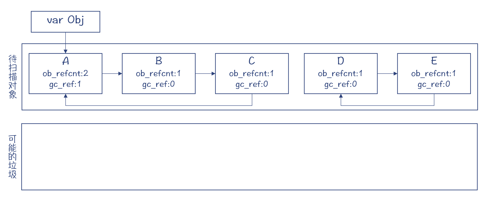
图9：扫描列表，修改gc_ref的值
gc_ref等于零的对象，有的可能是垃圾对象，比如D和E；但也有些可能不是，比如B和C。那要怎么区分呢？我们先把这些对象都挪到另一个列表中，怀疑它们可能是垃圾。
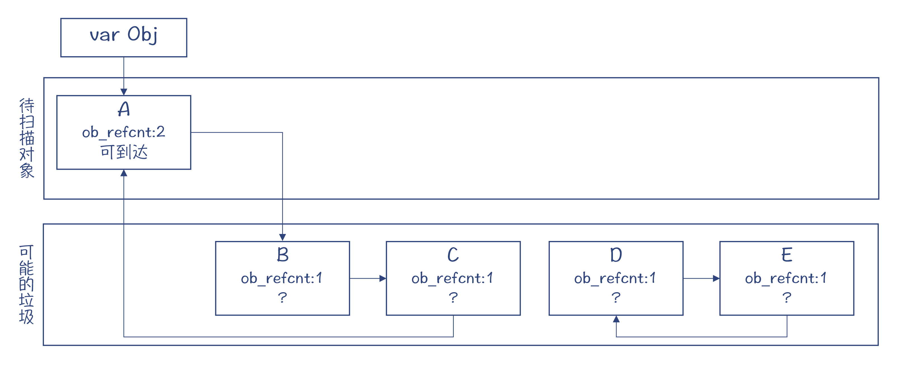
图10：认为gc_ref为0的对象可能是垃圾
这个时候，待扫描对象区只剩下了对象A。它的gc_ref是大于零的，也就是从gc根是可到达的，因此肯定不是垃圾对象。那么顺着这个对象所直接引用和间接引用到的对象，也都不是垃圾。而剩下的对象，都是从gc根不可到达的，也就是真正的内存垃圾。
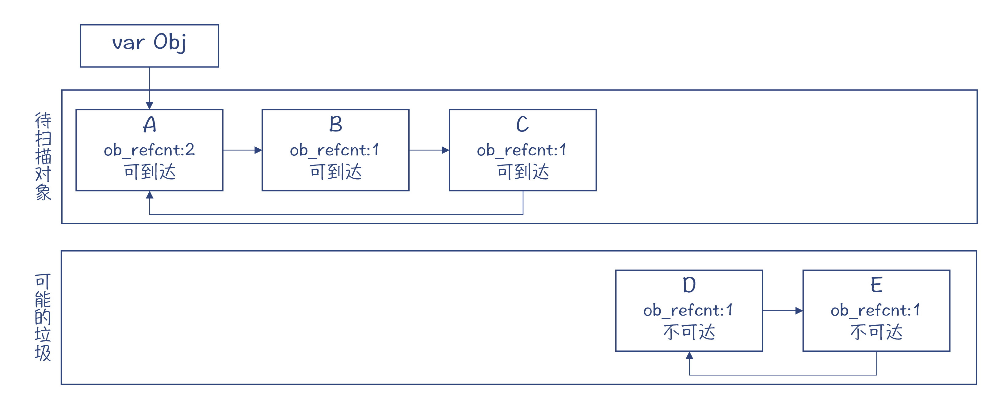
图11：去除其中可达的对象，剩下的是真正的垃圾
另外，基于循环检测的垃圾回收算法是定期执行的，这会跟Java等语言的垃圾收集器一样，导致系统的停顿。所以，它也会像Java等语言的垃圾收集器一样，采用分代收集的策略来减少垃圾收集的工作量，以及由于垃圾收集导致的停顿。
好了，以上就是Python的垃圾收集算法。我们前面提过，除了Python以外，Swift和方舟编译器也使用了引用计数算法。另外，还有些分代的垃圾收集器，在处理老一代的对象时，也会采用引用计数的方法，这样就可以在引用计数为零的时候收回内存，而不需要一遍遍地扫描。
编译器如何配合引用计数算法？
对于Python来说，引用计数的增加和减少，是由运行时来负责的，编译器并不需要做额外的工作。它只需要生成字节码就行了。而对于Python的解释器来说，在把一个对象赋值给一个变量的时候，要把对象的引用数加1；而当该变量超出作用域的时候，要把对象的引用数减1。
不过，对于编译成机器码的语言来说，就要由编译器介入了。它要负责生成相应的指令，来做引用数的增减。
不过，这只是高度简化的描述。实际实现时，还要解决很多细致的问题。比如，在多线程的环境下，对引用数的改变，必须要用到锁，防止超过一个线程同时修改引用数。这种频繁地对锁的使用，会导致性能的降低。这时候，我们之前学过的一些优化算法就可以派上用场了。比如，编译器可以做一下逃逸分析，对于没有逃逸或者只是参数逃逸的对象，就可以不使用锁，因为这些对象不可能被多个线程访问。这样就可以提高程序的性能。
除了通过逃逸分析优化对锁的使用，编译器还可以进一步优化。比如，在一段程序中，一个对象指针被调用者通过参数传递给某个函数使用。在函数调用期间，由于调用者是引用着这个对象的，所以这个对象不会成为垃圾。而这个时候，就可以省略掉进入和退出函数时给对象引用数做增减的代码。
还有不少类似上面的情况，需要编译器配合垃圾收集机制，生成高效的、正确的代码。你在研究Swift和方舟编译器时，可以多关注一下它们对引用计数做了哪些优化。
接下来，我们再看看其他语言是怎么做垃圾收集的。
其他语言是怎么做垃圾收集的？
除了Python以外，我们在第二个模块研究的其他几门语言，包括Java、JavaScript（V8）和Julia，都没有采用引用计数算法（除了在分代算法中针对老一代的对象），它们基本都采用了分代收集的策略。针对新生代，通常是采用标记-清除或者停止拷贝算法。
它们不采用引用计数的原因，其实我们可以先猜测一下，那就是因为引用计数的缺点。比如增减引用计数所导致的计算量比较多，在多线程的情况下要用到锁，就更是如此；再比如会导致内存碎片化、局部性差等。
而采用像停止-拷贝这样的算法，在总的计算开销上会比引用计数的方法低。Java和Go语言主要是用于服务端程序开发的。尽量减少内存收集带来的性能损耗，当然是语言的设计者重点考虑的问题。
再进一步看，采用像停止-拷贝这样的算法，其实是用空间换时间，以更大的内存消耗换来性能的提升。如果你的程序需要100M内存，那么虚拟机需要给它准备200M内存，因为有一半空间是空着的。这其实也是为什么Android手机比iPhone更加消耗内存的原因之一。
在为iPhone开发程序的时候，无论是采用Objective C还是Swift，都是采用引用计数的技术。并且，程序员还负责采用弱引用等技术，来避免循环引用，从而进一步消除了在运行时进行循环引用检测的开销。
通过上面的分析，我们能发现移动端应用和服务端应用有不同的特点，因此也会导致采用不同的垃圾收集算法。那么方舟编译器采用引用计数的方法，来编译原来的Android应用，是否也是借鉴了iPhone的经验呢？我没有去求证过，所以不得而知。但我们可以根据自己的知识去做一些合理的猜测。
好，回过头来，我们继续分析一下用Java和Go语言来写服务端程序对垃圾收集的需求。对于服务器端程序来说，垃圾收集导致的停顿，是一个令程序员们头痛的问题。有时候，一次垃圾收集会让整个程序停顿一段非常可观的时间（比如上百毫秒，甚至达到秒级），这对于实时性要求较高或并发量较大的系统来说，就会引起很大的问题。也因此，一些很关键的系统很长时间内无法采用Java和Go语言编写。
所以，Java和Go语言一直在致力于减少由于垃圾收集而产生的停顿。最新的垃圾收集器，已经使得垃圾收集导致的停顿降低到了几毫秒内。
在这里，你需要理解的要点，是为什么在垃圾收集时，要停下整个程序？又有什么办法可以减少停顿的时间？
为什么在垃圾收集时，要停下整个程序？
其实，对于引用计数算法来说，是不需要停下整个程序的，每个对象的内存在计数为零的时候就可以收回。
而采用标记-清除算法时，你就必须要停下程序：首先做标记，然后做清除。在做标记的时候，你必须从所有的GC根出发，去找到所有存活的对象，剩下的才是垃圾。所以，看上去，这是一项完整的工作，程序要一直停顿到这项完整的工作做完。
让事情更棘手的是，你不仅要停下当前的线程，扫描栈里的所有GC根，你还要停下其他的线程，因为其他线程栈里的对象，也可能引用了相同的对象。最后的结果，就是你停下了整个世界。
当然也有例外，就是如果别的线程正在运行的代码，没有可能改变对象之间的引用关系，比如仅仅是在做一个耗费时间的数学计算，那么是不用停下来的。你可以参考Julia的gc程序中的一段注释，来理解什么样的代码必须停下来。
更麻烦的是，不仅仅在扫描阶段你需要停下整个世界，如果垃圾收集算法需要做内存的整理或拷贝，那么这个时候仍然要停下程序。而且，程序必须停在一些叫做安全点（SafePoint）的地方。
在这些地方，修改对象的地址不会破坏程序数据的一致性。比如说，假设代码里有一段逻辑，是访问对象的某个成员变量，而这个成员变量的地址是根据对象的地址加上一个偏移量计算出来的。那么如果你修改了对象的地址，而这段代码仍然去访问原来的地址，那就出错了。而当代码停留在安全点上，就不会有这种不一致。
安全点是编译器插入到代码中一个片段。在查看Graal生成的汇编代码时，我们曾经看到过这样的指令片段。
好了，到目前为止，你了解了为什么要停下整个世界，以及要停在哪里才合适。那么我们继续研究，如何能减少停顿时间。
如何能减少停顿时间？
第一招，分代收集可以减少垃圾收集的工作量，不用每次都去扫描所有的对象，因此也会减少停顿时间。像Java、Julia和V8的垃圾收集器都是分代的。
第二招，可以尝试增量收集。你可能会问了，怎样才能实现增量呀？不是说必须扫描所有的GC根，才能确认一个对象是垃圾吗？
其实是有方法可以实现增量收集的，比如三色标记（Tri-color Marking）法。这种方法的原理，是用三种颜色来表示不同的内存对象的处理阶段：
- 白色，表示算法还没有访问的对象。
- 灰色，表示这个节点已经被访问过，但子节点还没有被访问过。
- 黑色，表示这个节点已经被访问过，子节点也已经被访问过了。
我们用一个例子来了解一下这个算法的原理。这个例子中有8个对象。你可以看出，其中三个对象是内存垃圾。在垃圾收集的时候，一开始所有对象都是白色的。
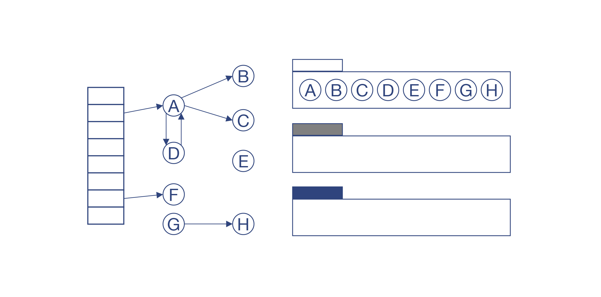
图12：所有对象标记为白色
然后，扫描所有GC根所引用的对象，把这些对象加入到一个工作区，并标记为灰色。在例子中，我们把A和F放入了灰色区域。
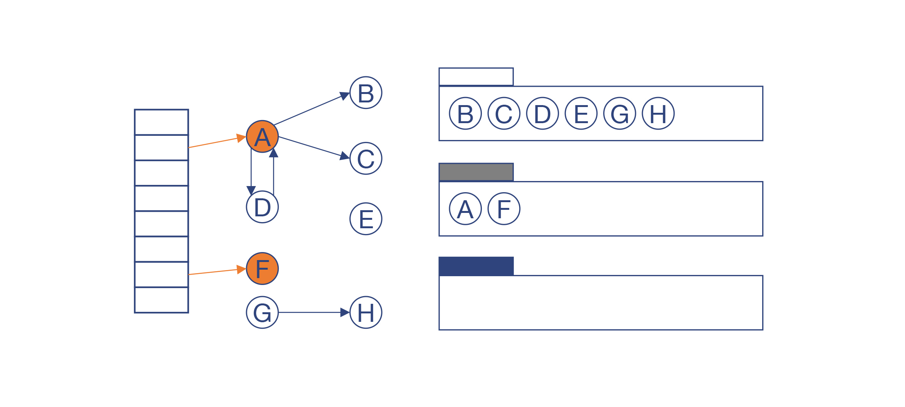
图13：正在处理，但没有处理完子节点的对象，标记为灰色
如果这个对象的所有子节点都被访问过之后，就把它标记为黑色。在例子中，A和F已经被标记为黑色，而B、C、D被标记为灰色。
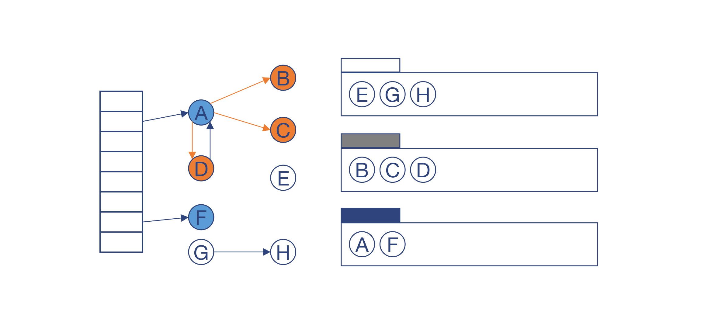
图14：已经处理完子节点的对象，标记为黑色用
继续上面的过程，B、C、D也被标记为黑色。这个时候，灰色区域已经没有对象了。那么剩下的白色对象E、G和H就能确定是垃圾了。
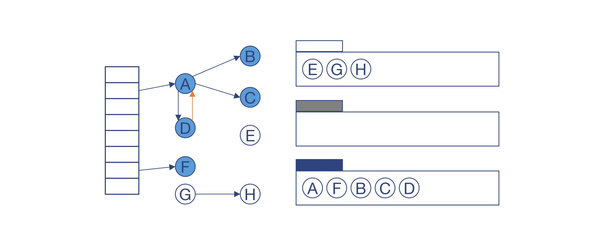
图15：处理完所有灰色节点后，剩下的白色节点就是垃圾
回收掉E、G和H以后，就可以进入下一次循环。重新开始做增量收集。
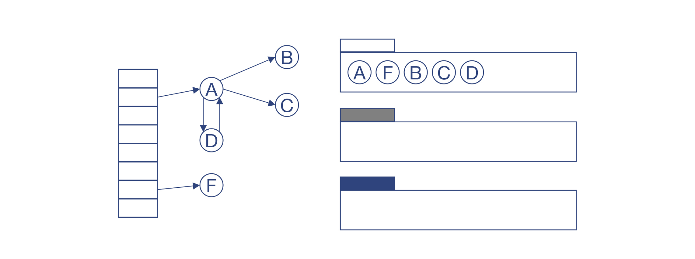
图16：开始下一次垃圾收集
从上面的原理还可以看出这个算法的特点：黑色对象永远不能指向白色对象，顶多指向灰色对象。我们只要始终保证这一条，就可以去做增量式的收集。
具体来说，垃圾收集器可以做了一段标记工作后，就让程序再运行一段。如果在程序运行期间，一个黑色对象被修改了，比如往一个黑色对象a里新存储了一个指针b，那么把a涂成灰色，或者把b涂成灰色，就可以了。等所有的灰色节点变为黑色以后，就可以做垃圾清理了。
总结起来，三色标记法中，黑色的节点是已经处理完毕的，灰色的节点是正在处理的。如果灰色节点都处理完，剩下的白色节点就是垃圾。而如果在两次处理的间隙，有黑色对象又被改了，那么要重新处理。
那在增量收集的过程中，需要编译器做什么配合？肯定是需要的，编译器需要往生成的目标代码中插入读屏障（Read Barrier）和写屏障（Write Barrier）的代码。也就是在程序读写对象的时候，要执行一些逻辑，保证三色的正确性。
好了，你已经理解了增量标识的原理，知道了它可以减少程序的整体停顿时间。那么，能否再进一步减少停顿时间呢？
这就涉及到第三招：并发收集。我们再仔细看上面的增量式收集算法：既然垃圾收集程序和主程序可以交替执行，那么是否可以一边运行主程序，一边用另一个或多个线程来做垃圾收集呢？
这是可以的。实际上，除了少量的时候需要停下整个程序（比如一开头处理所有的GC根），其他时候是可以并发的，这样就进一步减少了总的停顿时间。
课程小结
今天这一讲，我带你了解运行时中的一个重要组成部分：垃圾收集器。采用什么样的垃圾收集算法，是实现一门语言时要着重考虑的点。
垃圾收集算法包含的内容有很多，我们这一讲并没有展开所有的内容，而是聚焦在介绍常用的几种算法（比如引用计数、分代收集、增量收集等）的原理，以及几种典型语言的编译器是如何跟选定的垃圾收集算法配合的。比如，在生成目标代码的时候，生成安全点、写屏障和读屏障的代码，修改引用数的代码，以及能够减少垃圾收集工作的一些优化工作。
我把今天的知识点做成了思维导图，供你参考：
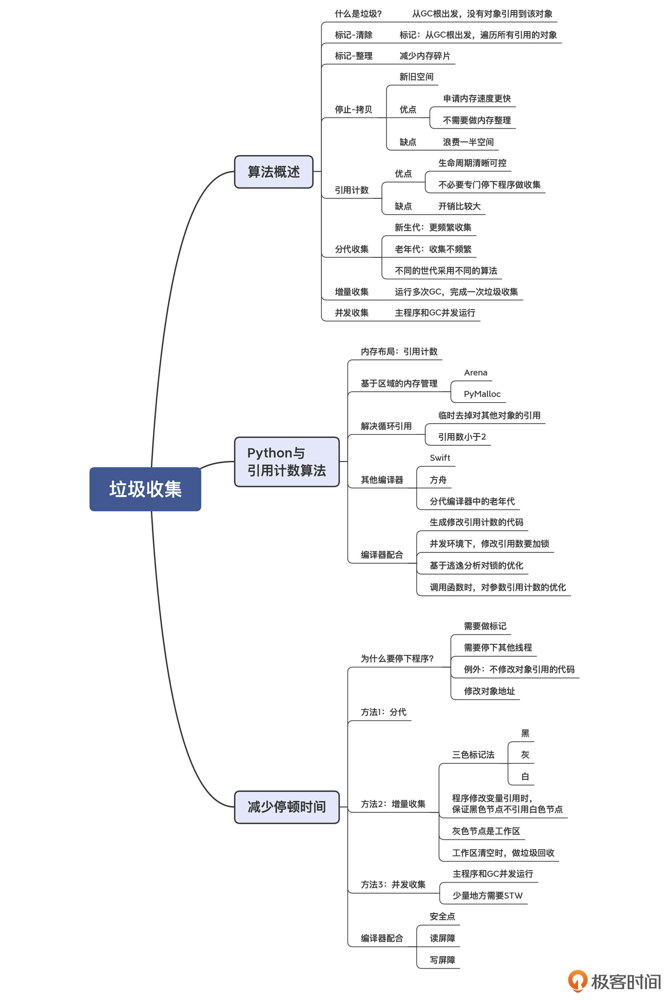
一课一思
我们说垃圾收集是跟语言的设计有关的。那么，你是否可以想一下，怎样设计语言可以减少垃圾收集工作呢？欢迎分享你的观点。
© 2019 - 2023 Liangliang Lee. Powered by gin and hexo-theme-book.